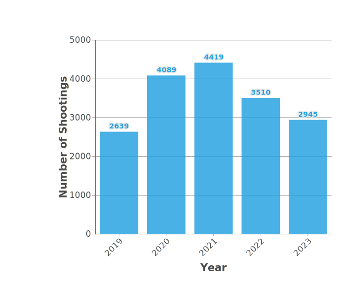
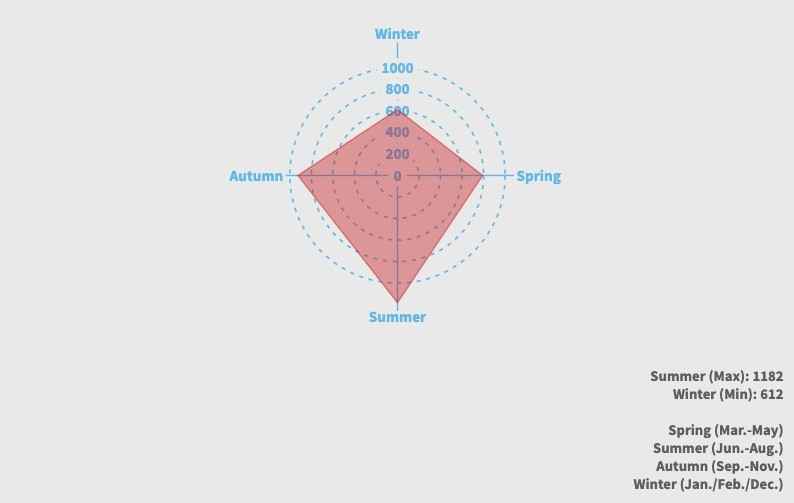
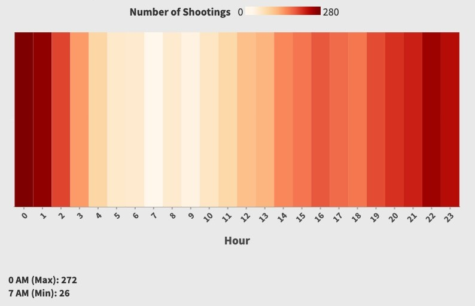
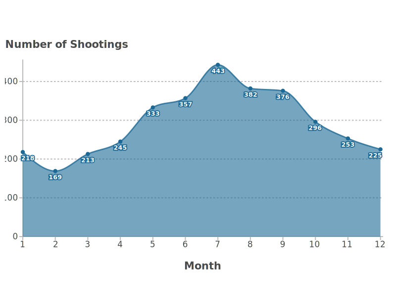

This year, homicides and nonfatal shootings in Chicago started to decline from recent peaks in 2020 and 2021. Despite these encouraging trends, we must not ease our focus on shootings.The following data visualizations show our full year-end analysis of Chicago shooting trends in 2022. These numbers represent much more than statistics; they reflect the lives lost, the families grieving, and the communities fighting for safety and justice. At the University of Chicago Crime Lab, we publish these data because understanding the full picture of gun violence is critical to finding solutions. By delving into these trends and inequities, we hope to help policymakers and community leaders develop strategies to support those most affected by gun violence down the road.
3,510
shootings occurred in 2022.
20%+
indicates a significant reduction in the number of shootings in 2022 compared to 2021.
30%+
shootings happened in the summer.
26.8%
marks a significant reduction observed in July 2022 compared to July 2021, since the enactment of the Bipartisan Safer Communities Act.
Safty Gap By Geography
Hover to see detailsThe first map displays the distribution of shooting incidents in 2022 using a white-to-red gradient, where darker red indicates a higher concentration of shootings. It highlights areas most affected by gun violence, particularly near downtown Chicago, where the Austin community recorded over 200 incidents. The eastern coastal areas, including SOUTH SHORE and AUBURN GRESHAM, also experienced significant gun violence, each with over 100 cases in 2022. In contrast, northern and southernmost regions, such as HOARE and SOUTH DEERING, reported fewer than 50 incidents.
The second map shows the percentage change in shooting incidents between 2021 and 2022. It uses a blue-white-red color gradient, where blue indicates a decrease in shootings, white represents little to no change, and red shows an increase. Overall, most neighborhoods saw a significant decline in shootings in 2022, with areas like DUNNING, LOGAN, and ASHBURN showing reductions of over 50 cases. However, some neighborhoods experienced increases, particularly in the north, such as JEFFERSON PARK and EDGEWATER, which reported over 50 additional cases. In the central-southern regions, BEVERLY and ARCHER HEIGHTS recorded nearly 100 additional cases, while a few areas like ROGERS and LOWER WEST SIDE showed minimal changes.
Factors Contributing to Safety Gap
This section lists some of the factors most likely to influence the geographic distribution of shootings. These factors and shootings are highly correlated on the map, but more rigorous conclusions require more in-depth research.
Hover to see detailsOutdoor Shootings and Commuting
The visualization results show potential relationships between gun violence and certain factors. Outdoor shootings are more concentrated along CTA-L routes, particularly near the Green Line and Blue Line (Forest Park) in central Chicago, the Pink Line, and the Orange, Green, and Red Lines in the southern areas.
Outdoor shootings were screened because criminals are more likely to commit crimes near public transport or in open outdoor areas, which are usually densely populated and have more escape routes, giving criminals ease of movement. By focusing on outdoor shootings, it is possible to analyse more accurately the impact of such environmental features on criminal behaviour.
Shootings and Abandoned Buildings
Areas with a higher density of abandoned buildings tend to exhibit a higher concentration of gun violence incidents. Abandoned buildings can serve as locations that facilitate criminal activities by providing cover or acting as spaces that are poorly monitored. These neglected areas often reflect broader socio-economic challenges, creating environments where gun violence is more likely to occur.
Shootings and Social Vulnerability Index
Similarly, regions with higher Social Vulnerability Index (SVI) values also demonstrate a greater prevalence of shootings. The SVI measures factors such as poverty, lack of access to transportation, and crowded housing, all of which can contribute to increased social instability and crime rates. This pattern is particularly pronounced in the midwestern and southern regions, where these socio-economic vulnerabilities intersect, amplifying the risk of gun violence.
Safety Gap by Time
Chicago Shooting Crime Trends: 2019-2023
Five-year Trends (2019-2023): using vertical bar charts to display annual data from 2019 to 2023, with changes in the height of the bars indicating rising and falling crime rates. The chart shows that shooting crime in Chicago peaks in 2021 and then declines in 2022.
Seasonal Trends in Chicago Shooting Crime in 2022
Seasonal Trends (2022): radar charts shows the number of shootings in 2022 by season, with the highest number of shootings in the summer months and the lowest in the winter months.
Hourly Trends in Chicago Shooting Crimes in 2022
Hourly Trends（2022）： the heat map shows the number of shootings at different times of day in 2022, with darker colours indicating the level of crime, darker red indicating more shootings and vice versa. Crime peaks at 0 AM and drops to its lowest at 7 AM. This suggests that the shootings occurred in the middle of the night.
Trends in Chicago Shooting Crime in 2022
Annual Trends (2022): an area map is used to show the number of shootings for each month in 2022, with increases and decreases in area visually reflecting changes in monthly crime rates. 2022 data show a significant increase in the number of shootings during the summer months (especially July).
Weekly Trends in Chicago Shooting Crime in 2022

Weekly trends (2022): the number of shootings per week in 2022 is shown in a dot plot, with the dot colours distinguishing the different days of the week. The graph shows that the number of shootings is higher on weekends, especially on Sundays.